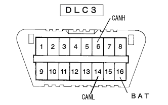

制御系CAN通信システム トラブルシュートの進め方 |
| 手順1 | 車両入庫 |
| 手順2 | 問診および現象確認 |
| 手順3 | ダイアグコード確認 |
 を参照する。
を参照する。ダイアグコードおよびフリーズフレームデータ確認
ダイアグコードおよびフリーズフレームデータを記録する。
ダイアグコードおよびフリーズフレームデータ消去
ダイアグコード再確認
記録したダイアグコードおよびフリーズフレームデータをもとに、不具合現象を再現させ、再度ダイアグコードが出力するかを確認する。
| A | コードなし、現象確認および再現できない |
| B | U0121/94(ABS)，U0123/62(VSC)，U0124/95(ABS)，U0126/63(VSC)のいずれも出力していない |
| C | 上記コードが出力している |
|
| ||||
|
| ||||
| |||||
| 手順4 | DLC3点検(CANH←→CANL) |
 |
IGスイッチをOFFにして、DLC3の6(CANH)←→14(CANL)間の抵抗を測定する。
| OK | 54-67Ω |
| NG-A | 67Ω以上 |
| NG-B | 54Ω以下 |
|
| ||||
|
| ||||
| |||||
| 手順5 | DLC3点検(BAT←→CANH、CANL) |
|  |
DLC3の各端子間の抵抗を測定する。
| 測定端子 | 測定条件 | 基準値 |
|---|---|---|
| 6(CANH)←→16(BAT) | IG OFF | 1MΩ以上 |
| 14(CANL)←→16(BAT) | IG OFF |
|
| ||||
| |||||
| 手順6 | DLC3点検(CG←→CANH、CANL) |
DLC3の各端子間の抵抗を測定する。
| 測定端子 | 測定条件 | 基準値 |
|---|---|---|
| 4(CG)←→6(CANH) | IG OFF | 3KΩ以上 |
| 4(CG)←→14(CANL) | IG OFF |
|
| ||||
| |||||
| 手順7 | ダイアグコード組み合わせ表へ(要領は参照) |
| 手順8 | ダイアグコード組み合わせ確認(要領は参照) |
| 手順9 | 調整、修理または交換 |
| 手順10 | 確認テスト |
| |||||
|---|---|---|---|---|---|